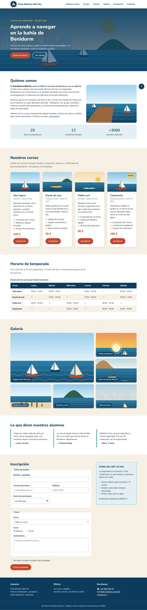

- UP
- UP3
- Criterios
- RA2 · 2f, 2h
- Duración
- 2 sesiones
- Agrupamiento
- Individual
- Entrega
- Aules · ZIP + URL del repositorio
- Tipo
- Desarrollo · formativa
Objetivos
- Definir una rejilla con
grid-template-columns,fr,repeat()yminmax(). - Hacer rejillas adaptables sin media queries con
auto-fityauto-fill. - Colocar elementos con
span, líneas y áreas con nombre. - Decidir cuándo usar Flexbox y cuándo Grid.
- Usar el inspector de rejillas de DevTools (CE 2f).
Recursos
- Punto de partida: tu PP 3.4. La serie entera trabaja sobre un único fichero HTML, la web del Club Náutico Mal Pas (descargar en ZIP), que no se modifica: cada práctica añade una capa a la misma hoja
css/estilos.css. - Teoría de la UP3, sección 9 (diapositivas 65 – 73).
- Grid Garden (en español).
- Laboratorio CSS: rejilla y áreas con nombre.
- Plantilla LEEME-plantilla.md.
Resultado esperado
Así debe quedar la página al terminar esta práctica. Desplaza las capturas para verla entera.

1Calentamiento y copia
Copia la carpeta de tu práctica anterior como lmsgi/UP3/PP3.5/ en tu repositorio y sigue trabajando sobre la misma hoja css/estilos.css. No cambies el HTML. Si la práctica anterior no te funciona, pide al profesor su hoja de estilos para no quedarte atrás.
Antes de empezar, completa los 28 niveles de Grid Garden y guarda una captura del último en el LEEME.md.
2Tarjetas en rejilla
Cambia el contenedor .tarjetas de flex a grid y borra el flex: 1 1 15rem de las tarjetas (ya no son elementos flex). Una sola línea hace la rejilla adaptable:
.tarjetas {
display: grid;
grid-template-columns: repeat(auto-fit, minmax(15rem, 1fr));
gap: 1.5rem;
}Vuelve a estrechar la ventana a 900 px y compara con la PP 3.4: ¿qué pasa ahora con la última tarjeta? Las tarjetas siguen siendo flex por dentro: Grid y Flexbox se combinan.
3Galería con foto destacada
Convierte .galeria en una rejilla de columnas de al menos 18rem (repeat(auto-fill, minmax(18rem, 1fr))), filas de 13rem (grid-auto-rows) y gap: 1rem. Borra el inline-block de .galeria__item y haz que las fotos llenen su celda sin deformarse (height: 100% y object-fit: cover).
La primera foto (.galeria__item--grande) ocupa dos columnas y dos filas con span. Explica en el LEEME.md la diferencia entre auto-fill y auto-fit; puedes verla en el laboratorio de Grid.
4Inscripción con áreas con nombre
Maqueta .inscripcion con dos áreas: el formulario a la izquierda (dos partes del ancho) y el aviso de seguridad a la derecha (una parte):
.inscripcion {
display: grid;
grid-template-areas: "formulario meteo";
grid-template-columns: 2fr 1fr;
align-items: start;
gap: 2.5rem;
}
.inscripcion__formulario {
grid-area: formulario;
}Asigna el área meteo al .aviso-meteo, quítale el margin-top de la PP 3.2 y haz que se quede visible al bajar por el formulario con position: sticky y top: 6rem. ¿Por qué sticky no funcionaría sin align-items: start? Pruébalo en el laboratorio de áreas.
5Datos personales en dos columnas
El primer fieldset del formulario pasa a ser una rejilla de dos columnas iguales con gap: 0 1rem, y el campo del nombre (.campo--ancho) ocupa la fila entera con grid-column: 1 / -1.
Cuidado con el selector: prueba primero .formulario fieldset:first-of-type y mira qué le pasa al fieldset de los radios del turno. Después usa el combinador de hijo > y explica la diferencia en el LEEME.md.
6Inspector de rejillas
Abre DevTools > Elementos, pulsa la etiqueta grid junto a .galeria y .inscripcion y activa los números de línea y los nombres de área. Guarda una captura en el LEEME.md.
7Observa el móvil
Reduce la ventana a 375 px y fíjate en la galería: la foto destacada provoca scroll horizontal. Explica en el LEEME.md por qué ocurre (¿cuántas columnas caben y cuántas pide span 2?). No lo arregles todavía: es el punto de partida de la PP 3.6.
8Valida y entrega
0 errores en los validadores. Commit: PP3.5: maquetación con Grid.
Niveles de realización
Básico
Pasos 1 – 4 y 8.
Estándar
Todos los pasos, con las explicaciones y capturas del LEEME.md.
Ampliación
Añade grid-auto-flow: dense a la galería y haz destacada también la quinta foto: explica qué cambia en el orden. Reescribe el pie con grid-template-columns: repeat(auto-fit, minmax(14rem, 1fr)) y compáralo con tu versión flex.
Antes de entregar, comprueba que…
- Las tarjetas forman una rejilla y la última fila no se estira.
- La galería tiene una foto de 2 × 2 celdas y ninguna imagen está deformada.
- Formulario y aviso van en dos columnas con
grid-template-areasy el aviso acompaña al bajar. - Los datos personales van en dos columnas y el nombre ocupa la fila entera; los radios no se han roto.
- El
LEEME.mdexplicaauto-fill/auto-fit, el combinador>y el problema del móvil. - Validadores CSS y HTML: 0 errores.
- Declaración de uso de IA en
LEEME.md.
Entrega
Comprime la carpeta PP3.5 (con index.html, css/, img/ y LEEME.md) como PP3.5_Apellido_Nombre.zip, súbela a Aules y escribe en el comentario la URL de tu repositorio.
Uso de inteligencia artificial. Puedes usar asistentes de IA para entender un error o resolver una duda, pero no para hacer la práctica por ti. Si los usas, decláralo en el fichero LEEME.md de tu entrega (qué herramienta, para qué y qué cambiaste tú). Debes poder explicar y defender todo lo que entregues (instrumento IE6). Presentar código generado sin declararlo supone un 0 en la práctica (PD, apartado 6.5).
Evaluación
Práctica formativa de la serie progresiva de la UP3: no tiene nota propia, se revisa en clase con la lista de comprobación y prepara las prácticas calificables (PR 3.1 – 3.5) y el Proyecto 3. Trabaja el criterio 2f, 2h del RA2. El profesor puede pedirte que expliques cualquier regla de tu hoja (IE6).